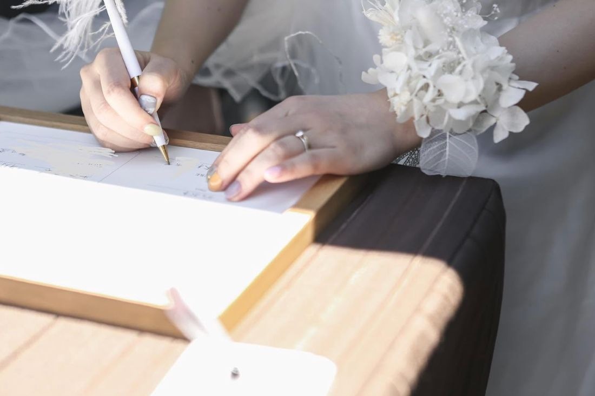

愛知のブライダルに関わる、全ての皆さまへ。
愛知ウェディング協議会は、ブライダル業界の存続のために、県に対して『ブライダルに関わる事業者への助成と支援を求める陳情書』を提出します。

いま、全ての業種で労使ともに大きな影響を受けています。そのなかで、私たちがどうしても伝えなければならないことがあります。それは、ブライダル業界の構造です。
一組の結婚式は、発注元から請け負いまで、幾重にも連なる事業者によって成り立っています。会場があり、そこから衣裳、ヘアメイク、写真、映像、装花、司会、演奏、引出物、送迎へと仕事が広がっていく。さらにはフリーランスが多く活躍するという現状があります。
この構造ゆえに、影響は「見えにくいところ」から先に出ます。数字に表れる前に、いちばん立場の弱い方から仕事を失っていく。そして、業種の区分では既存の支援の対象になりにくい。
この現状を理解していただき、破綻を防ぐための手当て・保証が必要不可欠であることを、早急に陳情いたします。
陳情の重みは、そこに何人の声が集まっているかで決まります。
一社の訴えは「一社の事情」として受け取られてしまうかもしれません。しかし、この地域のブライダルを支える事業者と個人が束になれば、それは「業界の実情」になります。
共に助け合い、力を合わせて、世の中を動かしましょう。諦めたらそこで終わりです。
この非常時にあたり、2020年度の協議会年会費はいただきません。いま、どの事業者も、どの個人も、一円を大切に守らなければならない状況です。費用を理由に声を上げられない方が出てしまっては、本末転倒だと考えました。
ぜひ、こちらまでメールをください。入会に関係する書類を一式、返信いたします。
aichi.wedding.council@gmail.comご入会は、事業者様に限りません。企業にお勤めの方も、個人会員としてのご入会をお待ちしております。フリーランスの方、いまは仕事が止まってしまっている方も、どうぞご遠慮なくご連絡ください。立場に関係なく、この業界に関わるすべての方の声が必要です。
そして、もう一つお願いがあります。拡散、シェアをお願いいたします。そして、SNSをしていない事業者さんへも、お知らせをお願いします。
この呼びかけがいちばん届いてほしいのは、実は、SNSで情報を追えていない方かもしれません。小さな工房で、ひとりで、静かに事態を見つめている方がいらっしゃるはずです。そういう方にこそ届くよう、お知り合いへのお声がけをお願いいたします。
一本の電話が、一人の仲間を増やします。その一人ひとりが、この業界を残す力になります。